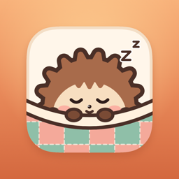

Snug
Every critter needs its own snug spot. A calm, fair logic puzzle for a few minutes a day.
Simple rules. One critter in every row, every column and every colored patch, and no two critters may touch, not even corner to corner.
Fair, always. Every puzzle has exactly one answer you can reach by pure logic. No guessing, no timers you have to beat, no lives.
A daily habit. A new daily puzzle for everyone, a streak widget, Game Center leaderboards and a share card for friends.
No ads, ever. The daily puzzle, the first 100 levels and your streak are free forever. Snug Club adds two extra dailies, all 300 levels, the archive, unlimited hints and every theme.